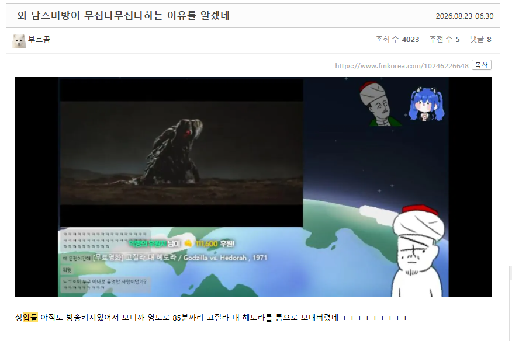

새벽 4시까지 방송하고 끄려다가 85분짜리 영화가 통으로 도네로 와서 강제로 봐야 하는 삶.
1971년작 고질라 대 헤도라, 무려 50년 전 영화를 통째로 보내버리는 하꼬방 육수의 위엄.
보통 버튜버 방에 영상은 시간 제한을 두는데 저 버튜버는 "어차피 근자 하꼬 버튜버방에 누가 돈을 씀?" 하고 최대 한도인 3600초를 열어뒀다가
방종 직전에 폭탄을 맞아버렸다.
버튜버 판에는 이런 이야기가 있다.
"여자 버튜버 육수(남)보다 위험한 건 남자 버튜버 육수(남)다."
평소에 관심도 없고 뭔지도 모르는 50년 전 영화를 강제로 시청하게 되는 삶...
당신은 하시겠습니까?
댓글
수집 당시 댓글 5개
에공 · 6 시간 전
11만원이면 봐야지 시팔아
안냥냥 · 6 시간 전
존나 행복한거아닌가? 그럼 9시간 동안 9번 보면 거진 백만원인데 넌 싫냐고 ㅋㅋ
독토로독토로 · 5 시간 전
저런건 속으로는 좋은데 오히려 싫은척 wwe 접수 해줘야지
시부야 · 4 시간 전
결국 85분 영화보고 11만원 받는 내용이네? 씨발 오히려 좋구만 뭔 하꼬 버튜버는 시궁창 삶 사는거마냥 써놨어?
ziok · 3 시간 전
영화도 보는데 시급이 5만원도 넘어? 개꿀